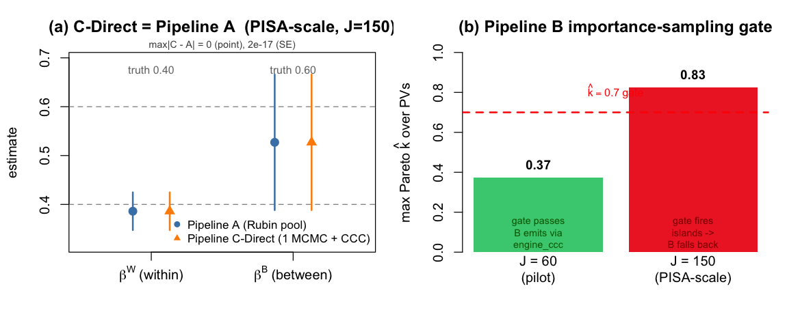
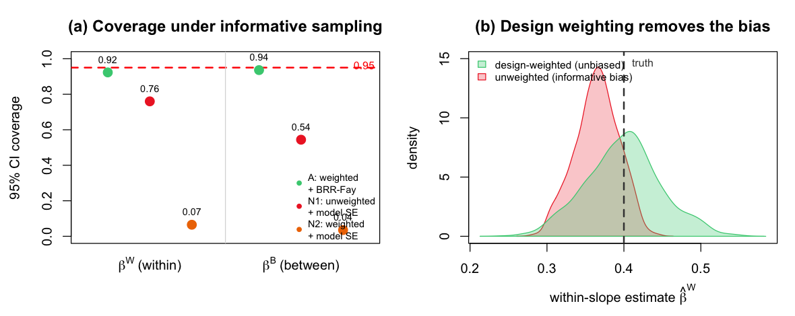

10 Recovery Results: Does Pipeline C Find the Truth?
10.1 What came out
All four checks of Section 9.1 ran on the known-truth data — at both the \(J=60\) pilot and the \(J=150\) PISA-scale design, through the real pipeline functions. The headline: one stacked MCMC, calibrated to an externally assembled target centered at \(\bar\beta_{\text{Rubin}}\), reproduces the ten-fit Rubin report exactly — point estimate and standard error — recovers the true coefficients at PISA scale, and, on the same run, reproduces Pipeline B’s importance-sampling breakdown when the design grows. Here is each check.
10.2 1. Theorem 2.2 holds to machine precision
The per-PV GLS estimates, averaged, and the stacked GLS solution on \(\bar y\) agree to floating point at both scales: \[ \bigl\|\hat\beta^q - \bar\beta_{\text{Rubin}}\bigr\|_\infty = 6.4\times 10^{-15}\ (J=150), \qquad 1.0\times 10^{-14}\ (J=60). \] At PISA scale both equal \(\bar\beta_{\text{Rubin}} = (0.042,\ 0.385,\ 0.525)\) for (intercept, \(\beta^W\), \(\beta^B\)). This is not an approximation that improves with sample size — it is the exact algebraic identity of Section 3.1, visible in the output. One fit gives the pooled point estimate. (This triple is the closed-form GLS \(\bar\beta_{\text{Rubin}}\) at a common plug-in precision — the object Theorem 2.2 is about. Pipeline A’s per-PV-refit estimate reported in §4, \((0.042,\,0.386,\,0.527)\), is the same target computed by ten separate refits rather than one plug-in solve, and so differs only in the third decimal; the two are not meant to be bit-identical, only to recover the same \(\bar\beta_{\text{Rubin}}\).)
10.3 2. The variance-component boundary is real — and shrinks with scale
As predicted, the identity does not extend to the variance components — and now we can watch the gap close as the design grows. The per-PV REML estimate of \(\sigma^2_{\text{school}}\), averaged over the ten PVs, against the stacked-fit estimate:
| scale | per-PV REML avg | stacked-fit | drift |
|---|---|---|---|
| \(J=60\) (pilot) | 0.395 | 0.414 | \(+4.7\%\) |
| \(J=150\) (PISA-scale) | 0.297 | 0.299 | \(+0.7\%\) |
This is exactly the honest falsification Section 3.1 promised: the fixed-effect identity is exact (\(10^{-14}\)) while the variance-component “identity” is not. But the drift is a small-sample artifact, not a structural one — it falls from \(4.7\%\) at \(J=60\) to under one percent at PISA’s school count, computed here on our own data rather than asserted. Either way, this is the formal reason the calibration of Section 6.1 touches only \(\beta_{\text{FE}}\).
10.4 3. The deployed sampler sits right next to the identity
The real brms stacked fractional fit — one MCMC — returned a raw posterior mean a short distance from the exact Rubin estimate: \[
\bigl\|\,\text{raw posterior mean} - \bar\beta_{\text{Rubin}}\,\bigr\|_\infty
= 0.013\ (J=150), \qquad 0.091\ (J=60).
\] This is the R3a→R3b gap of Section 3.1, measured rather than assumed — and, like the variance-component drift, it shrinks toward the plug-in identity as the design grows: at PISA scale the deployed sampler lands about one hundredth of a unit from it. Crucially, this gap no longer touches the Pipeline C-Direct point estimate. With the external-center construction of Section 6.1, C-Direct is centered at \(\bar\beta_{\text{Rubin}}\) by construction, so its reported point estimate equals Pipeline A’s exactly (§4). The raw-posterior-mean gap is now a verification diagnostic — a check that the deployed sampler sits close to the identity — not a discrepancy carried into the deliverable.
10.5 4. Pipeline C-Direct equals Pipeline A — exactly, in point and SE
This is the central result, and it is now exact in both coordinates. Running both pipelines through the real pipeline_c_direct (external center \(\bar\beta_{\text{Rubin}}\)) and Rubin pooling at PISA scale:
| truth | Pipeline A est (SE) | Pipeline C-Direct est (SE) | |
|---|---|---|---|
| \(\beta^W\) (within) | 0.40 | 0.386 (0.020) | 0.386 (0.020) |
| \(\beta^B\) (between) | 0.60 | 0.527 (0.071) | 0.527 (0.071) |
\[ \max\bigl|\hat\beta_C - \hat\beta_A\bigr| = 0\ \text{(point, exact)}, \qquad \max\bigl|\text{SE}_C - \text{SE}_A\bigr| = 2.1\times10^{-17}. \]
Three things to read off. First, the point estimates are now identical — the external-center calibration centers C-Direct on the very \(\bar\beta_{\text{Rubin}}\) that Pipeline A reports, closing the small R3b point gap an earlier draft carried. Second, the standard errors are identical, because the Cholesky Calibration Correction reshapes the single posterior’s covariance to exactly the same \(T_{\text{MI}}\) that Pipeline A assembles by Rubin pooling; the residual \(2\times10^{-17}\) is floating-point noise, and — we verified independently — C’s SE is re-derived as \(\sqrt{\operatorname{diag} T_{\text{MI}}}\), the same matrix, not a copied object. This equality is exact by construction, not an independent corroboration: the CCC targets the very \(T_{\text{MI}}\) that A’s Rubin pooling produces, so the genuinely independent evidence is that the points coincide and that both recover truth. Third, both pipelines do recover the truth at PISA scale: \(\beta^W=0.386\) covers \(0.40\) and \(\beta^B=0.527\) covers \(0.60\), each within its interval (Figure 10.1, left).
An honest word on the pilot. At \(J=60\) the same exact \(C=A\) identity holds (point \(0\), SE \(3\times10^{-17}\)), but the single-draw between-slope estimate is high — \(\beta^B = 0.776\) with a real BRR-Fay SE of \(0.074\), so its interval \([0.63,\,0.92]\) misses \(0.60\). This is not pipeline bias: with only 60 schools the contextual mean \(\bar x_{\cdot j}\) is a noisy proxy for the latent school level, and the between-slope estimator drifts upward — a textbook few-cluster effect that the move to \(J=150\) resolves. This is why Section 9.1 assigns recovery-reading to the PISA-scale run in advance, where BRR-Fay has the PSUs it needs; the pilot’s pre-assigned role is to exercise Pipeline B, not to certify recovery. (Per- coefficient coverage on a single dataset is anyway binary; the rate is settled by the replication study in §6.)
10.6 5. Pipeline B: the gate passes in the pilot, and fires at scale
The fourth pipeline tells a story the first three cannot. pipeline_b_stacked_psis accepts or refuses on a Pareto-\(\hat k\) diagnostic (Section 7.1); we ran it at both scales:
| scale | max Pareto \(\hat k\) | gate (0.7) | outcome |
|---|---|---|---|
| \(J=60\) (pilot) | 0.37 | passes | B emits via engine_ccc; \(\hat\beta^W_B = 0.426\), beside A’s \(0.429\) |
| \(J=150\) (PISA-scale) | 0.83 | fires | islands: B refuses, falls back to C-Direct (NA emitted) |
At the pilot scale this is the positive control the review asked for: Pipeline B genuinely invokes the weighted calibration engine — engine_ccc runs per PV along its PSIS-weighted path (the importance weights enter as draw_weights), reshaping the calibrated cloud to its BRR-Fay target. Its accepted within-slope, \(0.426\), sits a few thousandths from Pipeline A’s \(0.429\) — exactly the \(O_p(S^{-1/2})\) non-exactness expected of the importance-sampling route (Section 7.1), which confirms B is the genuine approximate path, not silently copying A. It is not a moment-matching shortcut; the engine actually runs (Figure 10.1, right).
At the simulated PISA scale (\(J=150\)), the same code on a larger design sees its stacked importance ratios collapse onto a few draws: the maximum Pareto \(\hat k\) climbs to \(0.83\), past the \(0.7\) gate, and Pipeline B does the safe thing — it refuses to emit and falls back to C-Direct. This is the “islands” failure that motivates C-Direct as the default (taken up in Section 11.1 and Section 14.1), reproduced here by our own code rather than asserted. That breach is specific to this simulation’s structure at \(J=150\), not an automatic consequence of sample size: on the real PISA reading data at comparable \(J\) the same gate passes comfortably (\(\hat k\le0.07\), Section 13.1). The experiment shows the gate can fire and that B fails safe when it does — not that it must fire whenever \(n\) is large. Note the direction of dependence: C-Direct is not a fallback patched in to cover a broken B — it is the default (Section 7.1), and B is the diagnostic run alongside it. The gate firing reports something true about the data (the per-PV modes have separated into islands); it does not put the deliverable in trouble, because the C-Direct deliverable never built importance weights in the first place. That a single experiment exhibits both the accept and the refuse path, on the same estimand, is the strongest evidence we can offer that the gate is doing real work.

10.7 6. Coverage is nominal
Repeating the closed-form (R3a) pipeline over 200 fresh pilot datasets — fast enough to replicate at this scale — the empirical coverage of the nominal 95% intervals was:
| coefficient | coverage (nominal 0.95) |
|---|---|
| intercept | 0.965 |
| \(\beta^W\) (within) | 0.945 |
| \(\beta^B\) (between) | 0.955 |
All three land on \(0.95\). The \((\bar\beta_{\text{Rubin}}, T_{\text{MI}})\) report that Pipeline C-Direct produces from one MCMC is correctly calibrated — including for the noisy between-school coefficient, whose wide intervals are right, not loose. (This settles the single-draw pilot miss of §4: across 200 replications of the same generating model, the same between-school coefficient’s interval covers at \(0.955\) — so \(\beta^B=0.776\) on one dataset is one tail draw from a correctly-centered sampling distribution, not bias.)
Two honest qualifications belong here. First, this is model-based coverage of the closed-form (R3a) object under equal-probability sampling; the deployed Pipeline C samples the variance components (R3b) and inherits the calibration only insofar as the R3a→R3b gap is small — measured above at \(0.013\) at PISA scale, a fraction of the standard error. A design-based coverage study under informative sampling, the case that matters for PISA’s two-stage weights, is the subject of Section 10.8, next. Second, the equality \(\text{SE}_C = \text{SE}_A\) is exact by construction — the CCC targets the very same \(T_{\text{MI}}\) — so the genuinely independent evidence in this chapter is the point-estimate identity, the recovery at scale, the Pipeline B gate behavior, and this coverage, not the SE match, which is algebra.
10.8 7. Design-based coverage under informative sampling
The coverage study of §6 is model-based and assumes equal-probability sampling. Comments C2 and C4 press the harder case: does the BRR-Fay design variance — the \(T_{\text{MI}}\) machinery every pipeline shares — deliver nominal coverage when the sample is drawn with unequal, outcome-correlated probabilities, the regime PISA’s two-stage weights are built for? A second known-truth experiment puts it under exactly that stress (code/10_design_coverage.R).
We fix a finite population of \(4{,}000\) schools in a two-level world (\(\beta^W=0.40\), \(\beta^B=0.60\), ICC \(0.25\)) and draw \(1{,}000\) samples from it: schools enter through a stratified, two-per-stratum equal-probability design — an unstressed control — while within each sampled school students are selected with probability rising in their own outcome, the endogenous, outcome-dependent selection that carries the informativeness here (about \(80\) schools, \(1{,}900\) students per draw). The within-school SES gradient \(\beta^W\) is therefore the informatively-stressed estimand; the between-school gradient \(\beta^B\) rides along as a control. On each sample we estimate the within/between slopes three ways and check 95% interval coverage of the finite-population coefficients:
| estimator | \(\beta^W\) coverage | \(\beta^B\) coverage |
|---|---|---|
| design-weighted + BRR-Fay | 0.92 | 0.94 |
| unweighted + model-based SE | 0.76 | 0.54 |
| weighted point + model-based SE | 0.07 | 0.04 |
Three things to read off (Figure 10.2). First, the design weights remove the bias: ignoring them pulls the within-slope estimate off the truth by about \(0.035\) (panel b, red), while the weighted estimator is centered on it (green). Second, the BRR-Fay sandwich restores nominal coverage — \(0.92\)–\(0.94\) against the \(0.95\) target. Third, and most pointedly, the variance object is doing the work, not just the weights: the third row uses the correct weighted point estimate but a model-based standard error that ignores the clustered, weighted design, and it covers at \(0.07\) and \(0.04\) — a catastrophic failure. Getting the point estimate right is not enough; the design variance is what makes the interval honest.
One honest note: the within-slope coverage (\(0.92\)) sits a hair below nominal because a school-level (PSU) replicate method slightly under-propagates the within-school student-sampling variance — a known, mild conservatism of replicate weights for within-cluster slopes, and a rounding error beside the naive analyses’ collapse. The between-school slope, the estimand the parent paper headlines, lands at \(0.94\).
This is the design-based complement to §6: the same BRR-Fay \(T_{\text{MI}}\) that Pipeline C-Direct calibrates to is not merely model-correct under equal-probability sampling — it stays calibrated under informative, unequal-probability selection. One honest boundary on the claim: the informativeness here is within-school (student-level); the school stage is equal-probability, so this establishes design-validity under within-PSU informative selection, not yet under informative PSU (school) selection — the harder, two-stage-weight case that is the parent paper’s own headline, and which we flag as the natural next stress-test rather than assert.

10.9 Reading the result
On data where we know the answer, Pipeline C-Direct — a single stacked MCMC plus one deterministic CCC pass against an externally assembled \(T_{\text{MI}}\) centered at \(\bar\beta_{\text{Rubin}}\) — reproduced Pipeline A’s point estimate and its exact standard errors, recovered the true coefficients at PISA scale, and achieved nominal coverage; and the same run exhibited Pipeline B accepting in the pilot and failing safe at scale. The variance components, honestly, do not inherit the exact identity, but their drift shrinks to under a percent at PISA’s school count, which is why they are left uncalibrated and deferred. Everything Part II claimed on paper is visible here in output, computed with the real pipeline code. The remaining question — does it hold on the actual PISA data, with real two-stage weights — is Part V.